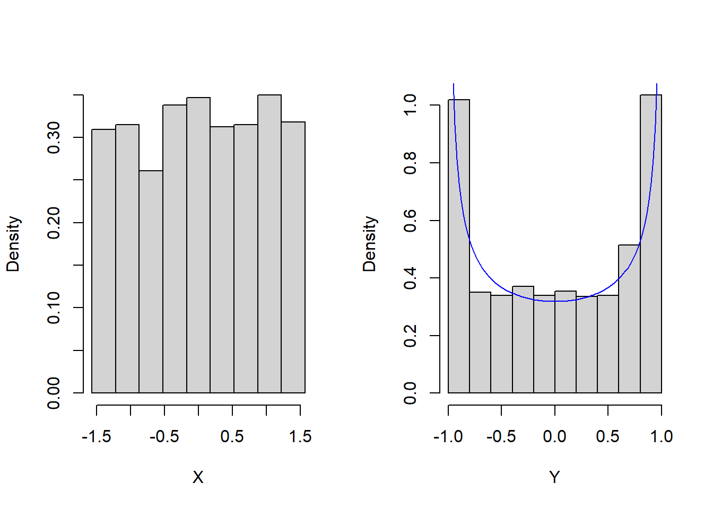

Chapter 5 Random Variables
5.1 Random variables
So far, we’ve discussed probabilities for events that are subsets of simple, finite sample spaces. However, often we are interested in continuous measurements/responses on sampled individuals, so we need to expand our probability calculus to accomodate this more general situation.
Let \(X\) denote a numerical response or function of a random sample from \(\mathcal{S}\). For a basic example, consider the experiment of flipping a fair coin and recording the outcome. Then \(\mathcal{S} = \{H, T\}\), but we might map heads and tails to the numbers 1 and 0. Therefore, let \(X:\{H,T\}\mapsto \{1,0\}\) with \(X(H) = 1\) and \(X(T) = 0\) denote this mapping/function. \(X\) is a random variable—or mapping—defined on the space \(\{0,1\}\), taking the sample space as domain and some space of numbers as its codomain.
In many cases we will consider continuous random variables, mappings with codomain equal to the real numbers, denoted \(\mathbb{R}\), or some (uncountable) subset thereof, like the interval \((0,1)\).
In contrast, when the codomain of a random variable is a countable set of numbers, e.g., the positive integers, then we call it a discrete random variable.
5.1.1 Examples of Discrete r.v.’s
Consider an experiment in ehich a mechanical dialer machine randomly dials phone numbers with a given area code. This is a common practice in polling. Let \(Y\) denote the random variable with value \(1\) if the dialed number is on a “do not call list” and zero otherwise. A random variable (r.v.) that can only take values 0 or 1 is called a Bernoulli random variable. (Oddly enough, a random variable that can only take values 1 or -1 is called a Rademacher r.v. !)
A quality control test is used to test the strength of concrete beams. The test exposes beams to both shear forces and flexure forces until each beam fails. An experiment randomly selects three failed beams and observes whether each failed due to shear (S) or flexure (F) forces. The sample space is: \[\mathcal{S} = \{SSS, SSF, SFS, FSS, SFF, FFS, FSF, FFF\}.\] Let \(X\) denote the random variable that counts the number of beams that fail due to flexure force. It has codomain \(\{0,1,2,3\}\) and is defined by the mapping \[X(SSS) = 3, \, X(SSF) = 1, \, \ldots, X(FFF) = 0.\]
In the context of 2. above suppose an experiment randomly selects a failed beam and measures the force \(X\) applied at point of failure in Newtons. Consider the sample space of all hypothetical concrete beams that could be tested. Then, \(X\) is a continuous r.v. with codomain \((0,U)\) for some upper bound \(U\). Depending on what is known about the beams, we may take \(U\) to be a specified upper bound, or we may set \(U = \infty\). More on this later…
5.2 Probability Mass Functions
A probability mass function or PMF is a function that assigns probabilities to values of discrete r.v.’s. We’ll write \(p(x)\) for the PMF of a r.v. \(X\) where \(x\) indicates any value in the codomain of \(X\). When \(X\) is a finite r.v. with only a small number of possible values its PMF can be conveniently expressed as a table of values. For example, in the concrete beam example in 2. above we have \[x: 0 \quad 1\quad 2\quad 3\] \[p(x):1/8\quad 3/8\quad 3/8 \quad 1/8\]
We can also represent PMFs using a function. For example, the probability \(x\) heads are observed in 20 flips of a fair coins is given by \(p(x) = {20 \choose x}(\frac{1}{2})^{20}\). Find a plot of this PMF below. Notice it is a graph of a discontinuous function, a plot of 21 discrete points or “masses.” This is how we get the name “probability mass function”—the probabilities are like discrete “masses” when displayed in a plot, in contrast to a smooth continuous function.
Example: Suppose a contractor needs between 1 and 5 (inclusive) permits for a construction job. If \(p(x)\propto x^2\) then find \(p(x)\). The key is that \(\sum_{x=1}^5 p(x) = 1\). Therefore, we need to find the proportionality constant \(C\) satisfying \(C(1^2+2^2+3^2+4^2+5^2) = 1\). Verify \(p(x) = x^2 / 55\).
5.3 Cumulative Mass Functions
A cumulative mass function or CMF is a function \(F(t)\) that assigns probabilities to sets of values \(\{x: x\leq t\}\). The CMF is related to the PMF \(p(x)\) in the following way: \[F(t) = \sum_{x\leq t} p(x).\]
Example: the probability there are at least \(t\) heads in the next \(20\) flips of a fair coin is \[F(t) = \sum_{x\leq t} {20 \choose t}\left(\frac{1}{2}\right)^{20}\] where \(t\) can be any non-negative real number. The plot of the CMF is below. Notice it is a step-function. It’s smooth and continuous except for the jumps at each integer value. And, notice the heights of the jumps are precisely the PMF values a those jumps.
Example: The CMF in the construciton permits example above may be expressed as follows: \[F(t) =\left\{ \begin{matrix} 0 & t < 1 \\ 1/55 & 1\leq t\leq 2 \\ 5/55 & 2\leq t\leq 3 \\ 14/55 & 3\leq t\leq 4 \\ 30/55 & 4\leq t\leq 5 \\ 1 & 5\leq t \\ \end{matrix}\right\} \]
5.4 Examples of Continuous r.v.’s
Iowa DoT (Department of Transportation) records the locations of car accidents along interstate 80. Suppose these measurements are recorded as the number of feet past the last mile marker. It makes sense to treat these are continuous measurements on an interval \((0,5280)\) feet.
During a storm you count the number of seconds between flashes of lightning and subsequent sounds of thunder using a stopwatch with precision in hundredths of a second. It makes sense to treat these measurements of time as continuous random variables taking values in a set of positive real numbers.
5.5 Probability assignments for continuous r.v.’s
Let \(X\) denote a random variable taking values in a (possibly unbounded) interval of real numbers \((a,b)\). We say \(X\) is a continuous r.v. if it has zero probability of being any particular value, i.e., \(P(X=x) = 0\) for all \(x \in (a,b)\) but has non-negative probability of taking a value in a sub-interval, i.e., \(P(x_1 < X <x_2) \geq 0\) for all \(a\leq x_1 < x_2\leq b\).
Example: Uniform probability assignment. Suppose the probability \(X\) belongs to an interval is proportional to the length of the interval. Then, if \(X \in (a,b)\) we have \(P(a \leq X \leq B) = P(\mathcal{S}) = 1 = \frac{b-a}{b-a}\). And, for any \(a\leq x_1 < x_2\leq b\) we have \(P(x_1 < X < x_2) = \frac{x_2 - x_1}{b-a}\). What is the probability \(X = x\) for any \(x \in (a,b)\)? Take the limit: \[P(X = x) = \lim_{h\rightarrow 0} P(x \leq X \leq x+h) = \lim_{h\rightarrow 0}\frac{x+h - x}{b-a} = \lim_{h\rightarrow 0}\frac{h}{b-a} = 0.\]
The probability density function (PDF) denoted \(f(x)\) is used to assign probabilities to intervals of values in the codomain of a continuous random variable. For a continuous r.v. \(X\), \(f(x)\) satisfies, \(f(x)>0\) for all \(x\) in the codomain of \(X\) and \[P(a\leq X\leq b) = \int_a^b f(x)dx.\]
The cumulative probability density CDF (also call distribution function or cumulative distribution function) denoted \(F(x)\) is defined by the following integration of the PDF \[F(x) = P(X\leq x) = \int_{-\infty}^x f(t)dt.\]
Warning: the PDF does not assign probabilities to singletons \(\{x\}\); \(f(x)\) does not equal \(P(X=x)\). Rather, \(P(X=x) = \int_x^x f(t)dt = 0\).
Example: Suppose the locations of auto accidents along a 200 mile interval of I-80 in Iowa are distributed uniformly. Then, we can regard the location of the next car accident as a continuous r.v. with CDF \(F(x) = x/200\), and PDF \(f(x) = \frac{d}{dx}F(x) = 1/200\). The chance of the next accident occuring between miles 50 and 55 is \(\frac{55-50}{200} = 0.025\). Find plots of this PDF (red) and CDF (blue) below. The red line is at height 1/200. In particular, not these are smooth functions, in contrast to the PMF and CMF functions above. This smoothness versus discreteness motivated the adjectives “density” versus “mass,” which originated in physics literature.
5.6 Transformations of random variables
Let \(X\) denote a continuous random variable with PDF \(f(x)\), and let \(Y = g(X)\) for some function \(g\). What is the probability \(P(Y \leq y)\) for some value \(y = g(x)\)? By definition, \[F_X(x) = P(X\leq x) = \int_{-\infty}^x f_X(x)dx\] where \(f_X(x)\) denotes the PDF of \(X\). If \(g\) is invertible, then we can use “u-substitution”: \(x = g^{-1}(y)\) and \(dx = \frac{1}{g'(x)}dy\) so that \[F_X(x) = \int_{-\infty}^x f_X(x)dx = \int_{g(-\infty)}^{y=g(x)} \frac{1}{g'(g^{-1}(y))} f_X(g^{-1}(y))dy.\] And, by differentiating w.r.t. y (and considering the cases \(g\) is increasing versus \(g\) is a decreasing function) we find \[f_Y(y) = \left|\frac{1}{g'(g^{-1}(y))}\right| f_X(g^{-1}(y)).\]
Example: Let \(X\) be an angle measured in radians selected at random from the interval \([-\pi/2, \pi/2]\) with uniform probability. Then, \(f(x) = \frac{1}{\pi}\) for \(x \in [-\pi/2, \pi/2]\). Let \(Y = \sin X\). The PDF of \(Y\) is given by \[f_Y(y) = \left|\frac{1}{\sin'(\arcsin y)}\right|\frac{1}{\pi} = \left|\frac{1}{\pi\cos(\arcsin y)}\right| = \frac{1}{\pi(1-y^2)}.\] The plots below illustrate a random sample of such \(x-\)values along with their transformations to \(y\):
